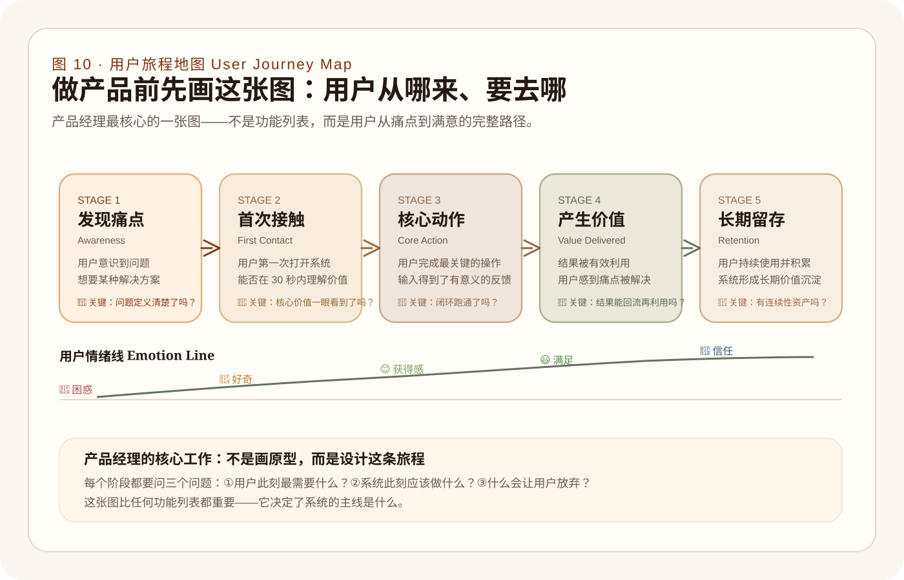
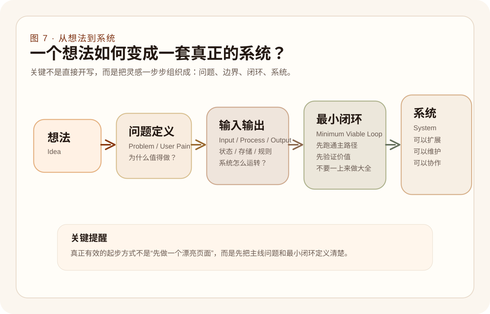
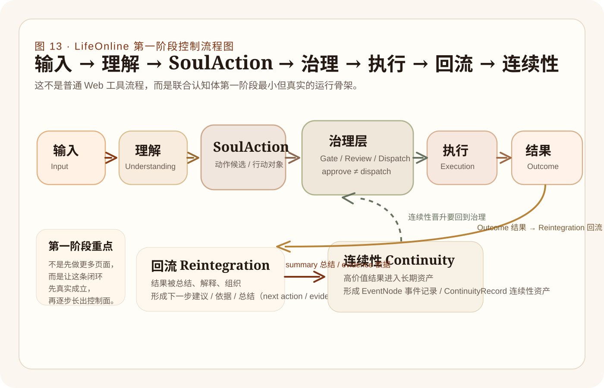
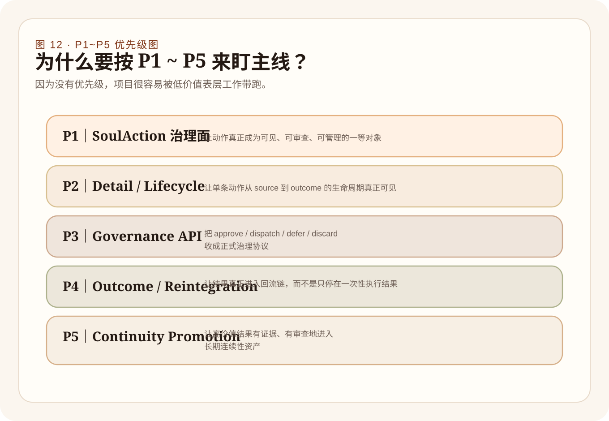
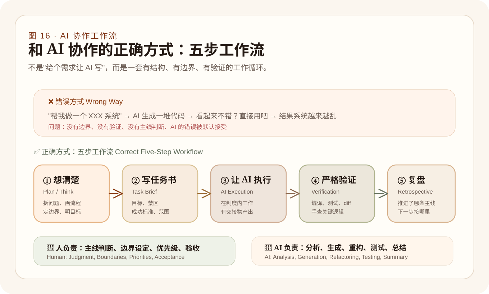
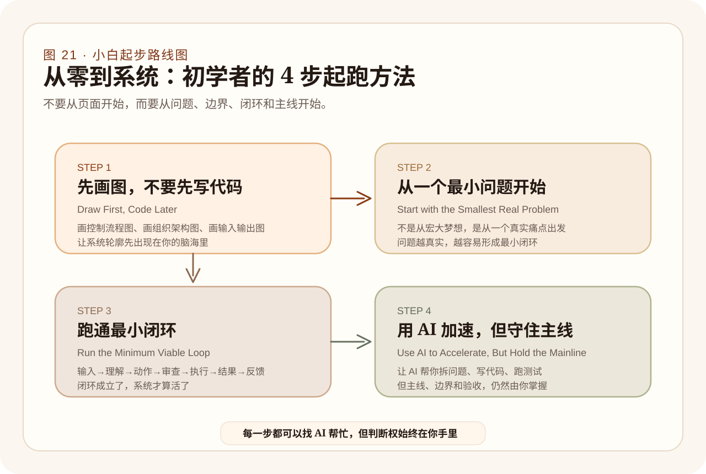

工具 Tool
做一件明确的事，比如一个待办清单、一个图片压缩器、一个笔记输入页。
给没有软件开发经验的人
这不是一篇普通的编程教程，也不是一份泛泛而谈的 AI 科普。 它试图用 LifeOnline 这个真实项目，带你看懂： 在大模型时代，一个没有软件开发背景的人，如何理解软件、组织软件、开发软件， 并一步步把一个想法变成真正可运行、可治理、可持续演进的系统。
它已经不是一篇单纯长文，而是一份包含多章节结构、21 张插图、术语表、章节摘要和项目方法论骨架的在线书稿。
这章先解决一个最基础的问题：这本书到底写给谁，以及为什么零基础的人也值得进入软件创造。
这本书是写给没有软件开发经验的小白的。不是写给已经会写一堆框架代码的人，也不是写给只想看几个提示词就立刻做出产品的人。
如果你现在的状态是：
那么，这本书就是给你的。
它不打算先把你变成语法机器，而是先帮你建立一张地图：软件是什么、系统怎么长、AI 应该怎么被使用。
过去，很多人把“不会编程”理解成“没有资格参与软件创造”。大模型时代改变了这件事：不会写代码的人，也第一次可能真正参与系统的构思、设计、拆解、验证、组织和迭代。
但门槛下降，不等于复杂性消失。恰恰相反，越是容易生成代码，越需要理解：什么是系统、什么是工程、什么是边界、什么是治理。
因为 LifeOnline 不是一个“玩具项目（Toy Project）”。它不是只想做一个界面好看的控制台，也不是只想堆一个能聊天的 AI 工具。
它代表的是一种更接近未来的软件形态：软件不再只是页面和按钮，而可能是一个人机联合认知体（Human-AI Cognitive System）。
换句话说，LifeOnline 想处理的不只是“用户点一下按钮，系统回一个结果”这种传统交互，而是更长的链条：
这非常适合拿来做一本书的蓝本。因为它逼着我们去面对那些真正重要的问题：
如果我们能用 LifeOnline 讲明白这些问题，这本书就不会只是一本过时很快的“某某框架教程”，而更像一本有长期价值的系统入门书。
选择 LifeOnline 作为蓝本，不是因为它“酷”，而是因为它迫使我们正视系统、治理、回流和连续性这些真正重要的问题。
把“软件是页面”这层浅理解，推进成“软件是对现实问题的一种可运行组织方式”。
很多初学者对软件的第一印象，是一个 App、一个网站、一套按钮、一个页面。这些理解不能说错，但它们只看到了“表面”。
更本质地说：软件，是把现实世界中的目标、规则、流程和信息，变成一套可以稳定运行的数字系统。
比如，一个记账软件并不只是一个输入框和几张图表，它背后其实在做这些事：
也就是说，软件的本质不是“页面长什么样”，而是“系统如何组织现实问题”。
这点非常关键。因为如果你把软件理解成页面，就会沉迷于颜色、按钮、布局；但如果你把软件理解成系统，就会开始问更重要的问题：
这一层理解，是所有后续技术学习的基础。因为一旦你能看到系统，代码就不再只是神秘的字符，而是系统的一种实现方式。
软件不是“界面集合”，而是对现实问题的一种可运行组织方式。理解这一点，你才会开始从系统角度而不是从页面角度思考。

很多人以为“会写代码”就等于“会做软件”，其实不是。会写代码，更像是会使用工具；而软件工程，是在组织一整个工程过程。
一个很好懂的比喻是：写代码像是拿起锤子钉木板，软件工程则像是在设计房屋结构、安排施工顺序、控制材料质量和验收标准。
所以软件工程不是“让代码出现”，而是：
让软件不成为一次性的拼装品，而成为长期可以生长、可以维护、可以协作、可以反复演进的工程。
这也是为什么大模型时代并不会让软件工程消失。AI 可以帮你写很多代码，但它不会自动替你定义边界、自动保证系统长期可维护。人必须承担判断、组织、取舍和治理的角色。
架构设计听起来很高级，但它的核心思想其实很简单：把系统按职责分成若干层，每一层只和相邻层打交道。
最经典的分层架构（Layered Architecture）把系统分成四层：
分层的最大好处是：修改一层不会破坏其他层。比如你换了前端框架，后端逻辑不需要改；你换了数据库，业务逻辑也不受影响。
这就是为什么资深工程师总是先"画架构"再"写代码"——好的架构让系统在后续几十次修改中都不会失控。
在 AI 时代，架构设计更加重要：因为 AI 生成代码很快，但如果架构不清楚，生成的代码就会到处"耦合（Coupling）"——牵一发而动全身，越改越乱。
软件工程不是“把代码写出来”，而是保证系统可以被设计、实现、验证、维护和协作地长期生长。


帮读者建立第一张技术地图：前端负责呈现，后端负责规则，数据库负责记忆。
这是小白必须建立的第一张技术地图。你不一定一开始就会写它们，但一定要先知道它们分别在做什么。
前端（Frontend），是用户直接看到、直接操作的那一层。网页、按钮、输入框、图表、列表、页面切换，都属于前端世界。前端负责的是“呈现”和“交互”。
后端（Backend），是真正处理数据、规则、权限、业务逻辑的那一层。前端点“保存”，真正决定是否能保存、如何保存、保存到哪里，是后端在做。
数据库（Database），则是系统的长期记忆仓库。系统想记住用户、订单、文章、任务、事件、状态，都要落到数据库中。
理解了这张图，很多技术词就不再那么可怕。因为你开始知道：不同技术不是一团乱麻，而是在系统中扮演不同层级的角色。
前端负责呈现和交互，后端负责规则和处理，数据库负责记忆。理解这三层，是进入软件世界最关键的一步。

很多人会把“平台”当成一个空泛的大词，但它其实有很明确的意义：平台是能够承载多种能力、多条流程、多类模块的底座。
做一件明确的事，比如一个待办清单、一个图片压缩器、一个笔记输入页。
围绕某类用户问题，提供一套更完整的使用体验，通常有多个模块协作。
能承载多个流程、多个模块、多个场景，强调边界、复用和长期演化。
不仅承载业务，还承载认知对象、动作治理、结果回流与连续性积累。
LifeOnline 之所以重要，就是因为它不是一个简单工具，而是在向“平台”甚至“联合认知体”演化。它要组织的不只是某个单一功能，而是：
对初学者来说，理解“工具—产品—平台—联合认知体”这条演化线，会大大提高你的判断力。你会开始分得清：一个系统眼下是在做一个小功能，还是在长一个长期有效的骨架。
平台不是“大一点的产品”，而是能承载多种流程和模块的底座；联合认知体则是在此基础上进一步长出认知、治理与连续性能力。

把 AI 从“魔法黑箱”拉回到可理解的角色系统中。
大模型最容易被误解的地方，是人们会以为它是“自动写代码的魔法”。现实不是这样。它很强，但它的强，主要体现在理解语言、组织语言、生成候选结构、补全方案、协助推理上。
解释概念、写代码片段、写文档、查 bug。
一起讨论需求、架构、边界、优先级。
根据任务书修改文件、跑测试、补验证。
模拟产品、工程、评审、测试等不同角色。
直接参与产品逻辑，比如分类、总结、回流分析、动作规划。
LifeOnline 特别有代表性，因为它不仅在“开发时”使用大模型，也在“系统内部”把大模型作为一部分能力来使用。
所以在 LifeOnline 里，大模型不是单纯的开发工具，它还是系统的一部分。
理解这点很重要。因为当 AI 进入系统内部后，很多问题会从“怎么写提示词”升级成“怎么治理 AI 的输出、怎么让系统可追踪、怎么让结果能回流、怎么让连续性成立”。
把 AI 放进清晰角色里看，你就不容易神化它。真正成熟的做法，是明确它在哪些环节辅助、在哪些环节执行、在哪些环节必须被治理。

流程本身并没有消失。一个正常的软件开发过程，仍然是：想法、需求、架构、实现、测试、发布、维护。但 AI 的加入，让每一个阶段都可以被辅助甚至部分执行。
但这里有一个很大的陷阱：很多人会因此误以为“既然 AI 什么都能帮，那我就不需要理解开发流程了”。
真相恰恰相反：AI 越强，人越需要承担“组织者（Organizer）和判断者（Judge）”的角色。
也就是说，你不一定要亲自写每一行代码，但你必须知道：
不会这个，AI 就会把你带到一个看起来很忙、实际上很散的地方。
很多人听到"算法"就联想到 LeetCode 刷题。但对于初学者和产品经理来说，最实用的不是排序和搜索，而是两个核心概念：
状态机是最直觉的控制模式：一个东西有几种状态，在特定条件下从一种状态转到另一种。
比如一个文章的生命周期：草稿 → 审核中 → 已发布，或者 草稿 → 审核中 → 驳回 → 修改后重新提交 → 审核中 → 已发布。
在 LifeOnline 里，SoulAction 的状态就是：pending → approved → dispatched → completed。理解了状态机，你就理解了系统里大部分"流程"的运转方式。
队列就是"排队"：先进先出（FIFO, First In First Out），一个一个处理，不会遗漏。
当系统收到的请求比它能处理的速度快时，就需要队列。比如 LifeOnline 的 indexQueue——用户写了一篇笔记，它不是立刻被 AI 处理，而是先进入队列排队，等轮到它再处理。
队列的价值是：让系统在高负载下不崩溃、不遗漏、不乱序。
学会这两个概念，你就能理解 80% 的系统内部运转方式——不需要会写算法，但需要理解它们在系统设计中的角色。
AI 改变的是每个阶段的效率，不是流程本身。人依然要知道现在在哪一阶段、目标是什么、产出是否可靠。


很多人一开始最容易犯的错误，是急着写页面、急着做功能、急着让东西看起来“像个产品”。其实更好的顺序，是先想清楚问题。
先回答五个问题：
接下来，不要先做页面，而要先画图：
然后再去做最小闭环（Minimum Viable Loop）：不要一开始就做“完整系统”，而是先做一条能跑通、能验证价值、能支撑后续扩展的主路径。
用更通用的说法，任何系统的最小闭环都是：
接收输入（Input） → 理解意图（Understanding） → 产生动作候选（Action Candidate） → 经过检查和审批（Review） → 执行（Execution） → 产出结果（Outcome） → 把结果反馈回系统（Reintegration，回流） → 形成长期积累（Continuity，连续性）
对于 LifeOnline 来说，这条闭环更具体地写成：输入 → 理解 → SoulAction（动作候选） → 治理（Governance：审查 / 批准 / 分发） → 执行 → 结果 → 回流 → 连续性。
不管你做什么系统，先跑通这样一条闭环，比做十个页面更重要。这就是“系统活起来”的最小骨架。
产品经理做项目，不是从功能列表开始，而是从"用户旅程"开始。用户旅程就是：用户从发现问题、到使用系统、到获得价值的完整路径。
一张好的用户旅程图至少要回答这些问题：
LifeOnline 的用户旅程就是：记录生活输入 → 系统理解并生成动作候选 → 治理审查 → 执行 → 结果回流 → 长期连续性积累。这条旅程就是产品的"主线"。
对小白来说，最好的起步方式不是追求完整，而是先做出一条可验证、可解释、可延展的最小闭环。




让读者意识到：没有优先级和阶段管理，AI 只会让项目更快地漂。
做软件如果只靠灵感，最常见的结果就是：今天加一个功能，明天补一个界面，后天觉得那里也不错，最后代码越来越多，但系统越来越不清楚。
所以软件开发必须有管理。最核心的三件事是：
比如，你可以把项目用 P1 到 P5 分成五条主线：
LifeOnline 实际使用的就是这种结构：P1 是动作治理面（SoulAction Governance），P2 是生命周期细节（Detail / Lifecycle），P3 是治理协议（Governance API），P4 是结果回流（Outcome / Reintegration），P5 是连续性晋升（Continuity Promotion）。
你不一定要照抄这五条，但你一定要学会：任何项目都要有一个“主线优先级框架”。没有它，AI 很快就会把你的项目带向低价值的忙碌。
管理项目最实用的一个工具叫"价值-成本矩阵（Value-Cost Matrix）"。把每件要做的事放进四个象限：
产品经理最重要的能力就是识别"不要做"的事情。AI 时代这件事尤其重要：因为 AI 可以很快帮你做很多事，但如果方向错了，做得越快、浪费越大。
每次启动一轮工作前，先把待办事项放进这张矩阵，然后只做左上角（高价值低成本），这就是"用产品思维管理项目"。
没有优先级，就没有管理；没有管理，项目就会滑向“看起来很忙、其实很散”的状态。AI 越强，主线管理越重要。


如果你真的想在大模型时代高质量地开发软件，下面这些实践比任何单条提示词都重要。
这也是 LifeOnline 这段时间最重要的一个启示：真正有价值的进展，不是今天又多了几个文件，而是系统有没有更接近“正式可治理的联合认知运行态”。
所以 AI 辅助开发最好的用法，不是“让 AI 随便做点有价值的事”，而是：
让 AI 在明确主线、明确边界、明确成功标准的制度里，持续地推进真正重要的系统骨架。
高质量 AI 开发依赖三件事：清晰目标、正式交接物、严格验证。少一样，系统都容易漂。


LifeOnline 最有价值的地方，不只是它做了什么，而是它迫使我们换了一种视角去看软件。
不要把软件理解成页面和功能的堆积，而要理解成一个被持续组织、持续治理、持续回流的系统。
这句话对初学者尤其重要。因为初学者最大的风险往往不是不会写代码，而是：
LifeOnline 的价值，在于它把这些误区都暴露了出来：如果你不关心治理、不关心连续性、不关心回流、不关心事实源一致性，那么你做出来的东西很容易只是一个看起来厉害、实际上很浅的工具。
而真正高级的软件开发，应该有思想、有结构、有节奏、有主线，也有能力长期演进。
LifeOnline 的价值，不只是功能，而是它让我们看到：真正重要的是系统如何被组织、治理和持续生长。


如果你读到这里，最重要的不是立刻去学十门技术，而是先做五件更朴素但更有效的事：
你甚至可以从一个很小的题目开始：例如做一个“生活记录 + 总结 + 下一步建议”的小系统。关键不是功能多，而是你能否清楚地说出：
当你开始这样思考，你就已经不只是“在学编程”，而是在学做系统。
产品经理验证一个 MVP（Minimum Viable Product，最小可行产品）是否成立，通常会检查以下清单：
如果以上 6 条全部满足，恭喜——你的系统已经"活了"。接下来才是扩展、优化和打磨的阶段。
你下一步最该练的，不只是写代码，而是画图、分层、定义闭环、管理主线，以及和 AI 建立正确协作方式。

我们正站在一个很特别的时间点上。过去，做软件像是在学一门很高门槛的手艺：先学语言，再学框架，再慢慢学系统。现在，大模型正在重写这个过程。
不会写代码的人，第一次有可能真正参与软件创造。这是巨大的变化。但这并不意味着工程思维不重要了，恰恰相反——它变得更重要了。
未来的软件开发，不只是“人写代码”，也不只是“AI 写代码”，而是人和 AI 一起组织系统。
这不是某个工具的小升级，而是一种新的创造方式。LifeOnline 这样的项目之所以有意义，不只是因为它做了某个功能，而是因为它让我们看到：未来的软件，可能会更像一个会记录、会治理、会回流、会积累连续性的联合认知体。
而你现在开始理解它，就已经站在这段历史里面了。
这本书想留下的，不是一堆零散技巧，而是一种新的理解：在大模型时代，软件开发的核心是组织系统、治理系统，并和 AI 一起把想法做成可持续生长的工程。
把全书高频词汇收拢成可快速回看的术语表。
用户直接看到和操作的那一层，负责呈现与交互。
真正处理规则、权限、逻辑和数据的一层。
系统长期保存数据的地方，可以理解为系统的记忆仓库。
系统为什么存在、要解决什么问题、这一阶段先做什么。
系统如何分层、模块如何协作、数据如何流动。
对动作、权限、执行和结果进行审查、约束和管理的机制。
把执行结果重新组织并纳入系统下一轮运行的过程。
让高价值结果进入长期资产，形成可继承、可演进的系统记忆。